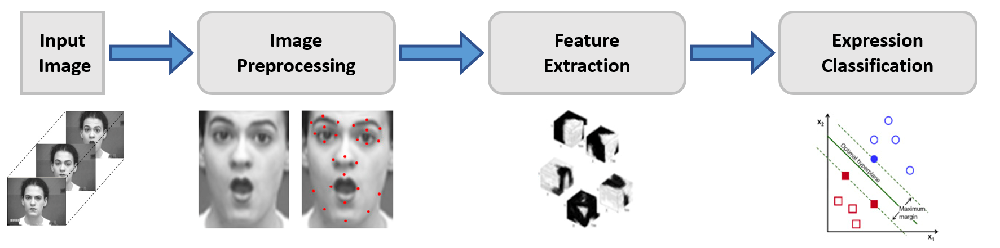
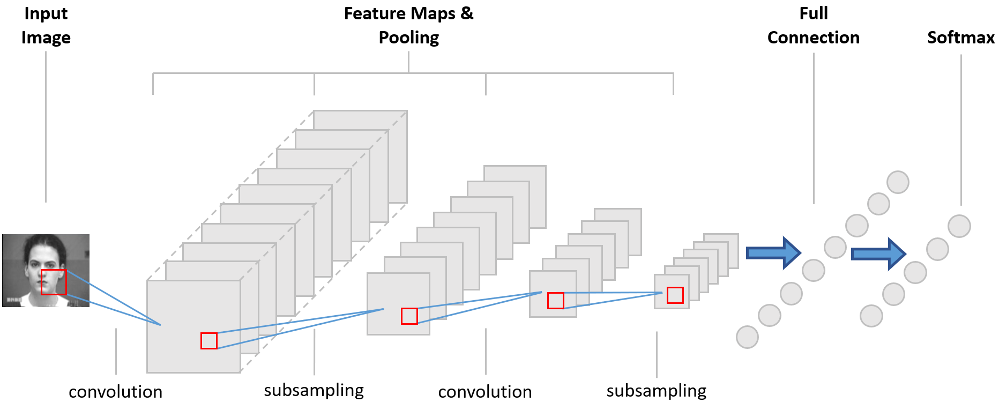
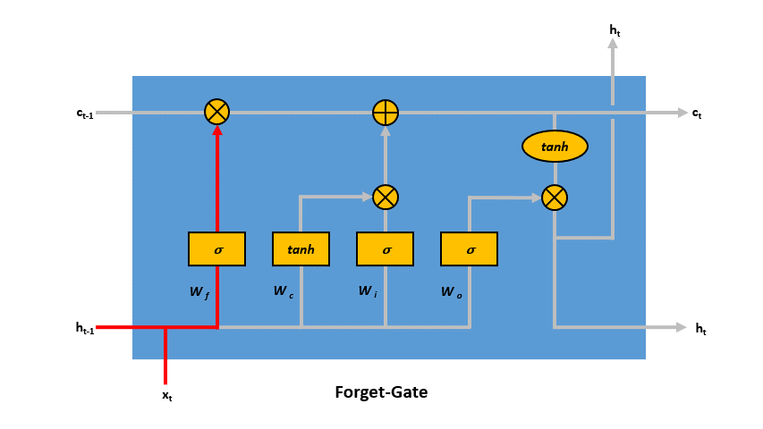

FER Ansätze¶
Konventioneller Ansatz¶
Image Preprocessing
Feature Extraction
Expression Classification
Geringere Rechenleistung und Speicherbedarf als Deep-Learning-basierte Ansätze
Weniger abhängig von Daten und Hardware
Merkmalsextraktion und die Klassifizierung müssen manuell und separat entwickelt werden, was bedeutet, dass diese beiden Phasen nicht gleichzeitig optimiert werden können
Konventionelle FER-Verfahren kann in drei Hauptschritte unterteilt werden:

1. Image Preprocessing¶
Das Ziel des Image Preprocessing ist die Eliminierung irrelevanter Informationen aus den Eingabebildern und die Verbesserung der Erkennungsfähigkeit relevanter Informationen.
Kann sich direkt auf die Extraktion von Merkmalen und die Leistung der Expression Classification auswirken
Bilder können aus verschieden Gründen durch andere Signale „verunreinigt“ sein (komplexe Hintergründe, Lichtintensität, Verdeckung etc.)
Image Preprocessing Prozesse sind:
Noise Reduction: Average Filter (AF), Gaussian Filter (GF ), Median Filter (MF), Bilateral Filter (BF)
Face Detection: Gesichtserkennung hat sich zu einem eigenständigen Gebiet entwickelt, Vorstufe in FER mit dem Ziel, die Gesichtsregion zu lokalisiern und zu extrahieren
Normalisierung der Skala und der Graustufen: Normalisierung von Größe und Farbe der Eingabebilder, mit dem Ziel Berechnungskomplexität zu reduzieren unter der Prämisse, die wichtigsten Merkmale des Gesichts zu erhalten
Histogramm-Entzerrung: Verbesserung der Bildwirkung
2. Feature Extraction¶
Die Feature Extraction ist der Prozess zur Extraktion nützlicher Daten oder Informationen aus dem Bild, z.B. Werte, Vektoren und Symbole. Dieser Schritt ist von Bedeutung, da sich die Feature Extraction direkt auf die Leistung der Algorithmen auswirken kann.
3. Expression Classification¶
Der Gesichtsausdruck wird basierend auf eine der Gesichtskategorien bestimmt. Die Kategorien werden mit Hilfe von Pattern Classifiers vortrainiert.
Weitverbreite Classifier:
kNN (k-Nearest Neighbours )
SVM (Support Vector Machine)
Adaboost (Adaptive Boosting)
Bayessches Netz
SRC (Sparse Representation-based Classifier)
PNN (Probabilistic Neural Network)
Deep-Learning-basierte Ansätze¶
Deep-Learning-basierte Algorithmen für die Merkmalsextraktion, Klassifizierung und Erkennungsaufgaben
Bei vielen Aufgaben des maschinellen Lernens hervorragende Leistungen gezeigt
Bei FER:
Reduzierung der Abhängigkeit von der Bildvorverarbeitung und Merkmalsextraktion
Robust gegenüber Umgebungen mit unterschiedlichen Elementen, z.B. Beleuchtung und Verdeckung
Fähigkeit, große Datenmengen zu verarbeiten
Convolutional Neural Network (CNN)¶
State-of-the-art in FER
Implementation als “End-to-End”-Modell: Lernen direkt von den Eingabedaten zum Klassifikationsergebnis
Merkmale:
Weniger Netzwerkparameter durch lokale Konnektivität und die gemeinsame Nutzung von Gewichten
Schnelle Trainingsgeschwindigkeit
CNN enthält drei Arten von heterogenen Schichten:
Convolutional Layer: Eingabebilder werden mit Hilfe von Filtern gefaltet und es wird eine Feature Map erzeugt
(Max) Pooling Layer: (Max) Pooling-Layers (Subsampling) senken die räumliche Auflösung der gegebenen Feature Maps
Fully Connected Layer: berechnen die Klassen-Scores auf dem gesamten Originalbild und ein einzelner Gesichtsausdruck wird basierend auf der Ausgabe von Softmax-Algorithmus erkannt

Long Short-Term Memory (LSTM)¶
Art von RNN (Recurrent Neural Network), das aus LSTM-Einheiten besteht
“Langes Kurzeitgedächtnis”: Im Gegensatz zu herkömmlichen RNN, hat das LSTM durch den Einsatz verschiedener Gates eine Art Erinnerung an frühere Erfahrungen
Lösen das Problem der verschwindenden Gradienten, welches in RNNs vorkommt
Geeignet für die zeitliche Merkmalsextraktion von aufeinanderfolgenden Frames
Ein LSTM-Netz hat drei Gates, die die Zellzustände aktualisieren und steuern:
Forget-Gate: steuert, welche Informationen im Zellzustand vergessen werden sollen, wenn neue Informationen in das Netzwerk gelangen
Input-Gate: steuert, welche neuen Informationen in den Zellzustand kodiert werden, wenn die neuen Input-Informationen vorliegen
Output-Gate: steuert, welche im Zellzustand kodierte Information im folgenden Zeitschritt als Input an das Netzwerk gesendet wird 
Weitere Modelle¶
Es gibt viele Ansätze, die auf einem eigenständigen CNN oder einer Kombination aus LSTM und CNN basieren:
3D Convolutional Neural Network (3DCNN)
3D Inception-ResNet
DRML (Deep Region und Multi-Label-Learning)
Candide-3
Multi-Angle FER
Hybrid CNN-RNN